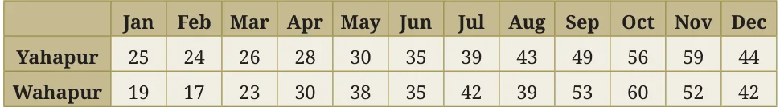
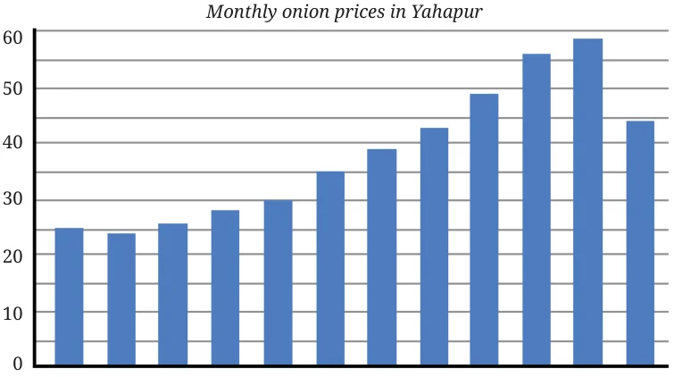
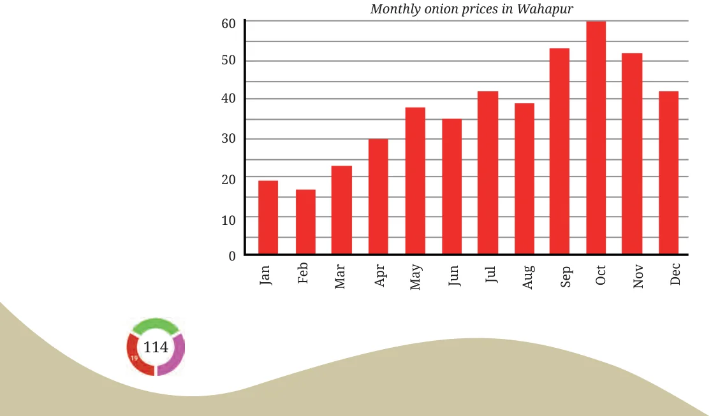
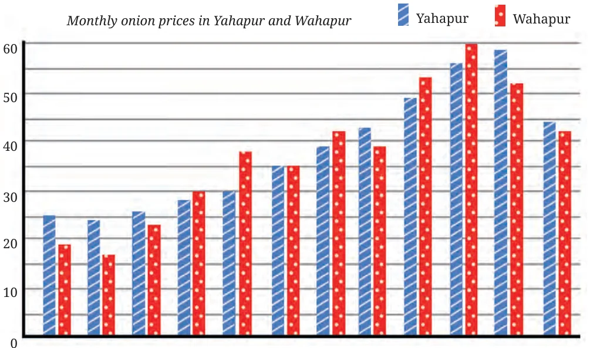
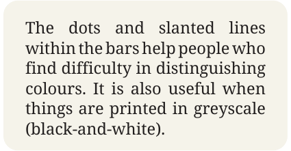

We can often understand data more clearly if it is presented as a picture. This is called data visualisation. Last year, we saw how to visualise data using graphs. Let us explore visualisation further.
Clubbing the Columns
Earlier, we looked at the monthly onion prices in Yahapur and Wahapur.

Two column graphs for this data are given below.


The two graphs can also be combined into a single graph. We just draw the bars side by side! Verify if the data in the table matches the graph below.

We use different colours to clearly separate the data from the two places. This is called a clustered column graph. Since it has two columns in each cluster, we also call it a double column graph. What is the scale used in this graph? The relative heights of the bars tell us where onions are costlier in each month. We can also visually estimate the difference by referring to the markings along the vertical line.

Is it now easier to compare month-wise prices in both places?